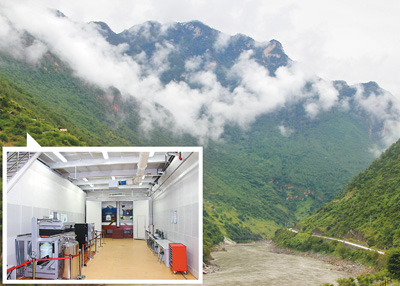
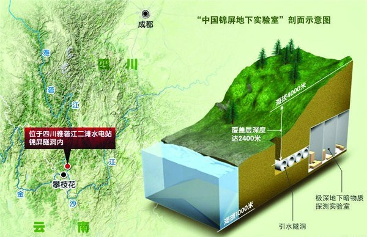

2014-08-02 20:02:00
據《人民日報》8月2日報導，北京清華大學與雅礱江流域水電開發有限公司8月1日在成都簽署共同建設中國錦屏地下實驗室二期的合作協議。這標誌著中共第一個極深地下實驗室，也是世界最深地下實驗室，的擴建工作正式啟動。

錦屏地下實驗室，背景是雅礱江
這消息和軍事没有什麼關係，所以我本來不計劃在此着墨，但是台灣媒體登出了誤解（http://www.chinatimes.com/newspapers/20140803000702-260309），說這是一個核子實験站，將“研究高空的核爆炸效應及其殺傷範圍”，我不得不來闢謠。
核子實験是很髒的事，有時實験室建在地下室，但那不是為了屏蔽外來的污染，而是怕核子實験本身污染附近的住家；不過工作人員總是要進進出出的，因此主要的幅射隔絶還是在實験室内用鉛板來擋。至於地下核子試爆，那當然是用過一次就毁了，所以通常是以便宜為重，就在廢棄的礦坑進行，深度視核弹的當量决定，我還没聽說過有超過一千公尺的。
中共的這個錦屏地下實驗室是利用既有的雅礱江錦屏水電站的引水隧洞而建造的。錦屏二號水庫的水從雅礱江出發，流經四條17公里長的隧洞到隧洞末端推動八部超大型發電機排入金沙江，落差很大，使總發電量達到了4.8GW，將近核四的两倍，於2007年開工，2012年首台機組發電，预計2015年初竣工。這個工程是世界最長的水工隧洞，隧洞中段深度達到了2.5公里，也是世界第一。像這麼重要而昂貴的工程，當然不會用來做核試爆，也不會浪费在其他的核子實験上。
準備擴建這個世界最深地下實驗室的是北京清華大學物理系而不是清華大學核能研究院，實驗的對象剛好是我的老本行：高能粒子。十五年前，天文物理界做了一個極大的發現（後來因此得了2011年的諾貝爾獎）：宇宙中的物質（也就是所有的星球和氣團加起來）只占了總能量+質量（因為相對論裡两者可以互相轉換，所以是一件事）的5%，其他的95%又分為两類，依其對重力的反應，一類表現得像物質，另一類表現得像力場，所以前者就叫做“暗物質”（Dark Matter），而後者叫做“暗能量”（Dark Energy）。那為什麼暗物質和物質不一様呢？主要是在宇宙中的四種作用力裡面，暗物質只和重力作用，不像一般物質參與電磁力或强作用力。我們的實験器材可必須是用物質做的，如果要做任何（除了天文觀測以外）的暗物質實験，光有重力是没有用的，所以一些物理學家就假設暗物質也參與四種作用力的最後一種：弱作用力。弱作用力雖然比電磁力和强作用力弱得多，比起重力來還算好的。
就因為弱作用力太弱了，任何實験99.999...%的結果都是背景幅射經由電磁力或强作用力造成的，所以要做暗物質的實験，第一步就是盡量消除背景幅射，因此實驗室挖得越深越好，靠幾千公尺的岩石來遮擋背景幅射。清華大學物理系發現了錦屏水電站有現成的世界最深隧道，到隧洞中段最深處挖幾個房間就领先世界，那經費自然是水到渠成了。不過暗物質到底會不會和弱作用力反應還很難講，就算有反應，也得够强人類才量得到，所以清華大學物理系能不能借此拿到諾貝爾獎，還是看運氣的。
其實雅礱江錦屏水電站的引水隧洞裡早就有另一個暗物質實験（所以清華的計劃是“二期”工程），它就是2009年開始的由上海交通大學主導的PandaX（Particle AND Astrophysical Xenon detector）計劃。筆者在念新竹清華的時候，梅竹之間常有友善的競争；看來大陸的清交两校也喜歡互别苗頭。

PandaX自2009年啟動，2014年八月第一階段結果出爐
總而言之，錦屏地下實驗室進行的是純粹粒子物理的研究，和核子實験没有任何瓜葛，和軍事自然也就八竿子打不到一塊兒。